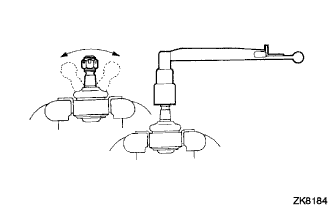
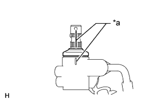
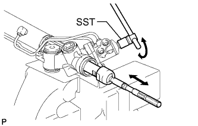
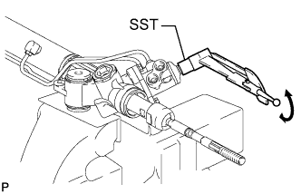

РУЛЕВОЙ МЕХАНИЗМ > ПРОВЕРКА |
| 1. ПРОВЕРЬТЕ НАКОНЕЧНИК РУЛЕВОЙ ТЯГИ В СБОРЕ |
|  |
Заверните гайку.
5 раз качните палец шарового шарнира вперед-назад, как показано на рисунке.
С помощью динамометрического ключа затяните гайку, непрерывно поворачивая ее со скоростью 1 оборот за 3–5 с, и снимите показания момента на 5-м обороте.
| 2. ПРОВЕРЬТЕ СУММАРНЫЙ ПРЕДНАТЯГ |
|  |
Нанесите метки, как показано на рисунке.
| *a | Метка |
Временно установите 2 рулевых тяги на рейку рулевого механизма.
|  |
При помощи SST поверните рейку рулевого механизма влево и вправо до упора 10 раз, чтобы детали заняли постоянное положение.
|  |
При помощи SST поверните регулирующий клапан и измерьте величину момента усилия поворота клапана.
| Тип кузова | Тип двигателя | Заданные условия |
| Для 5-дверных моделей | Для моделей с 1GR, 2TR и 1KD | 1,6 - 2,3 Н*м (16 - 23 кгс*см, 14 - 20 фунт-сила-дюйма) |
| Для моделей с 5L | 1,5 - 2,2 Н*м (15 - 22 кгс*см, 13 - 19 фунт-сила-дюйма) | |
| Для 3-дверных моделей | Для моделей с 1KD и 2TR |
После проверки преднатяга совместите метки.